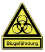
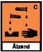
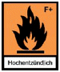
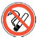
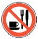
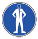
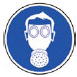
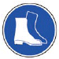

Muster-Betriebsanweisung
(gem. § 12 BioStoffV, §20 (1) GefStoffV) Taubenkot- Reinigungsarbeiten
Brücke [Name] in [Ort] |
Arbeitsbereich:
Tätigkeiten: |
Brückenhohlkasten und Brückenpfeiler
Entfernen des Taubenkotes |
Datum:
|
| Gefahren für Mensch und Umwelt |
 |
Biologische Arbeitsstoffe:
Im Taubenkot sind u.a. viele Infektionserreger enthalten. Diese
können Lungen- oder Darmerkrankungen verursachen, die zum
Teil erst nach 3 bis 4 Wochen auftreten. Hinzu kommen Parasiten,
wie die Taubenzecke oder Milbe, die auch den Menschen
befallen können.
Durch Aufwirbelung des Taubenkotes beim Reinigen können
diese Erreger in die Luft gelangen.
Durch die Staubbildung bedingt können auch Schimmelpilzsporen
in hohen Konzentrationen in der Luft vorhanden sein.
Dies kann zusätzlich zu allergischen Reaktionen insbesondere
der Atemwege führen.
|
|

 |
Gefahrstoffe:
Taubenkot hat aufgrund seines hohen pH-Wertes eine ätzende
Wirkung.
Allgemeine Gefahren:
[Auf weitere Gefahren der Baustelle, wie Absturzgefahr, elektrischer
Strom, ... ist vom Unternehmer hinzuweisen]
Gesundheitsgefahren:
- Lungen- oder Darmerkrankungen durch Infektionserreger
- Allergische und toxische Wirkung durch Schimmelpilze,
Endotoxine und Parasiten
- Brand- und Explosionsgefahr bei sehr trockenem, aufgewirbeltem
Taubenkot
- [weitere Gesundheitsgefahren sind vom Unternehmer gemäß
Gefahrenanalyse zu ergänzen]
Aufnahmepfade:
- Atemluft (Infektionserreger, Stäube)
- Haut, Schleimhaut (besonders bei Riss- und Schnittverletzungen
oder vorgeschädigter Haut)
- Mund
Allg. Hinweis:
Der Taubenkot kann durch verschmutze Gegenstände oder
Kleidung in Sozialräume und Fahrerkabinen von Baumaschinen
verschleppt werden.
|
|
| Schutzmaßnahmen/Verhaltensregeln |





|
Technische Schutzmassnahmen:
- Zum Entfernen des Taubenkotes möglichst Sauger XY
[Kategorie H] verwenden.
Organisatorische Schutzmassnahmen :
- Betreten des Schwarzbereiches nur mit Schutzkleidung
- Staubbildung ist zu vermeiden. Hierfür muss der Taubenkot
mit Sprinkler leicht benässt werden.
- Alleinarbeit ist untersagt.
- Rauchen, Essen, Trinken und Schnupfen ist nur im Weißbereich
gestattet.
- Erste-Hilfe-Material einschließlich Augenspülflasche ist in der
Schwarz-/Weißanlage staubgeschützt vorzuhalten
- Erste-Hilfe-Material einschließlich Augenspülflasche ist zusätzlich
staubgeschützt am Arbeitsplatz vorzuhalten.
- Hautschutzcreme XY [vom Unternehmer zu ergänzen] ist vor
dem Anziehen der Schutzhandschuhe und nach Reinigung der
Hände (siehe Hautschutzplan) anzuwenden.
- Im Schwarzbereich eingesetzte Geräte sind vor Verbringen in
den Weißbereich mit [vom Unternehmer auszufüllen] zu reinigen.
- Nach Verlassen des Schwarzbereichs Stiefelwaschanlage
benutzen.
Benutzung der S/W-Anlage:
- Stiefel im Stiefelwechselbereich lagern.
- Vor jeder Arbeitspause: Hände und Gesicht reinigen, Hände
desinfizieren, kontaminierte Schutzkleidung ablegen und in die
bereitgestellten Sammelbehälter entsorgen.
- Nach Beendigung der Arbeit: Händedesinfektion, duschen,
Hautpflegemittel benutzen, Kleidung wechseln.
Umgang mit Atemschutzgeräten:
- Im Arbeitsbereich: bei Nichtgebrauch in täglich zu reinigende
Behälter ablegen.
- In den Pausen: in der Schwarz-Weißanlage auf gekennzeichneter
Fläche ablegen.
- Nach Arbeitsende: dem Gerätewart zur Reinigung und
Wartung übergeben.
Persönliche Schutzausrüstung:
Im gesamten Bereich ist folgende Schutzausrüstung
zu tragen:
- Grundausrüstung [vom Unternehmer zu konkretisieren]:
- Schutzstiefel S2/II
- Nitrilgetränkte [....] Schutzhandschuhe
- [....] Einwegschutzanzüge
- Atemschutz:
- Gebläseunterstütze Vollmaske mit Partikelfilter P2 (TM2P)
|
|
| Verhalten im Gefahrfall |
| |
- Beim Auftreten von Unregelmäßigkeiten (z.B. Auftreten unbekannter
Gerüche, Auffinden von Fremdkörpern, Entwicklung
von Rauch oder Dämpfen) ist der Gefahrenbereich sofort zu
verlassen und der verantwortliche Bauleiter [Name ...] zu
informieren.
- Bei Brand ist der Arbeitsbereich unverzüglich zu verlassen.
Die örtliche Leitstelle der Feuerwehr [Tel.-Nr.: ......] ist zu informieren.
|
|
| Erste Hilfe |
|
- Auf der Baustelle hat ein ausgebildeter Ersthelfer [Name]
ständig anwesend zu sein.
- Bei Auftreten von Unwohlsein, Durchfall, Schwindel oder
Erbrechen ist der Vorgesetzte zu informieren und der Arzt zu
konsultieren.
- Bei Spritzern ins Auge ist dieses mit [.....] zu spülen.
- Bei Bergung der Verletzten ist auf die eigene Sicherheit zu
achten.
- Transportmittel XY [vom Unternehmer zu spezifizieren] ist
vorzuhalten.
- Bei Lagerung und Transport des Verletzten ist für Frischluftzufuhr
zu sorgen.
- Bei Verletzungen mit Kontamination ist dies den Rettungssanitätern
mitzuteilen.
- Die Telefonnummer der Rettungsleitstelle lautet: [........]
- Alle Verletzungen sind im Verbandbuch einzutragen.
|
|
| Entsorgung |
|
Verwendete Filter aus dem Atemschutzgeräten, Einwegschutzkleidung
(Schutzanzüge und -handschuhe) sind in die
gekennzeichneten Sammelbehälter vor der Schwarz-/Weißanlage
zu entsorgen.
Taubenkot ist in den XY- Behältern zur Entsorgung bereitzustellen.
Behälter sind nach der Befüllung mit gelbem Klebeband zu
verschließen und mit „Biogefährdung“ zu kennzeichnen. |
|